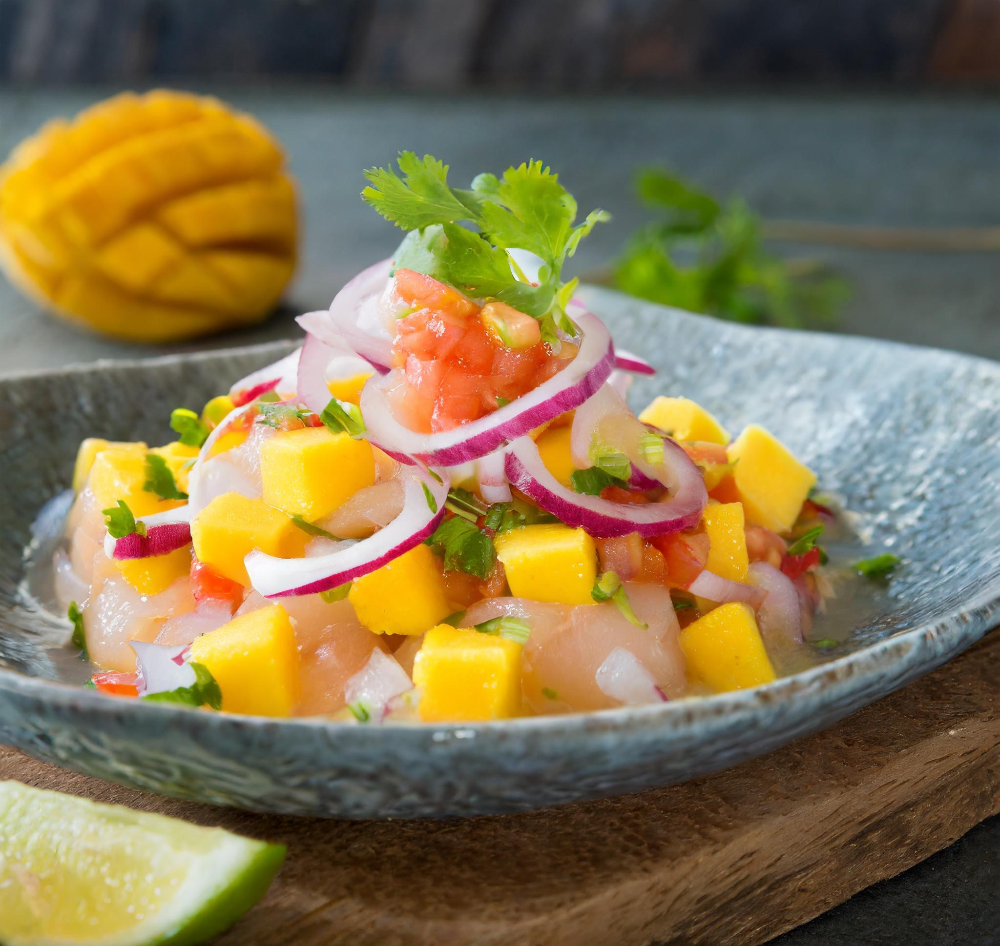
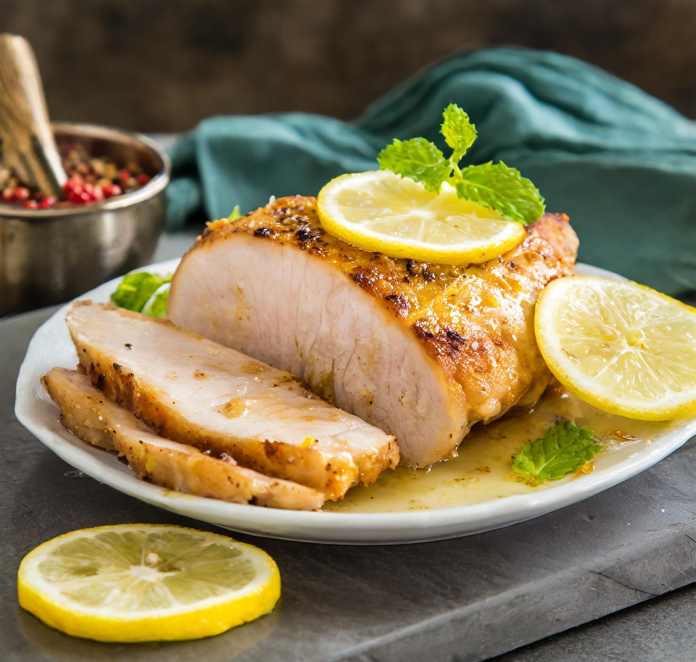
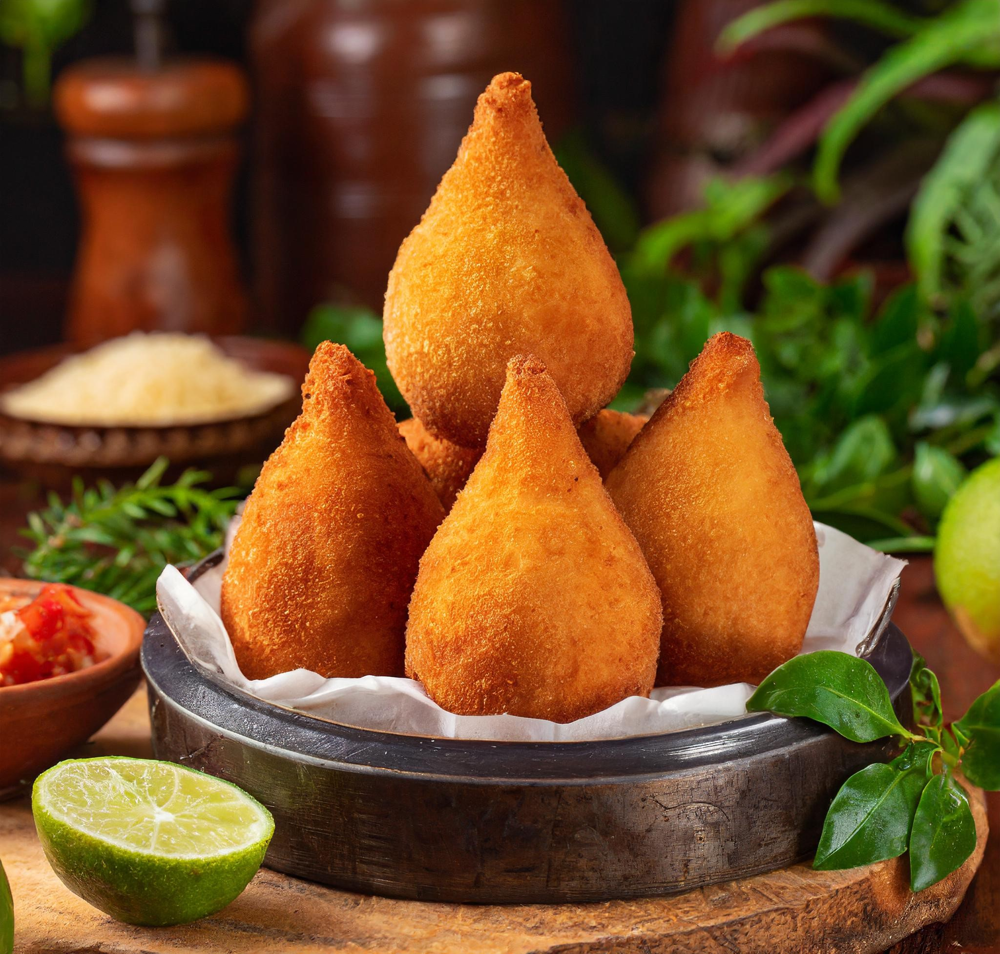
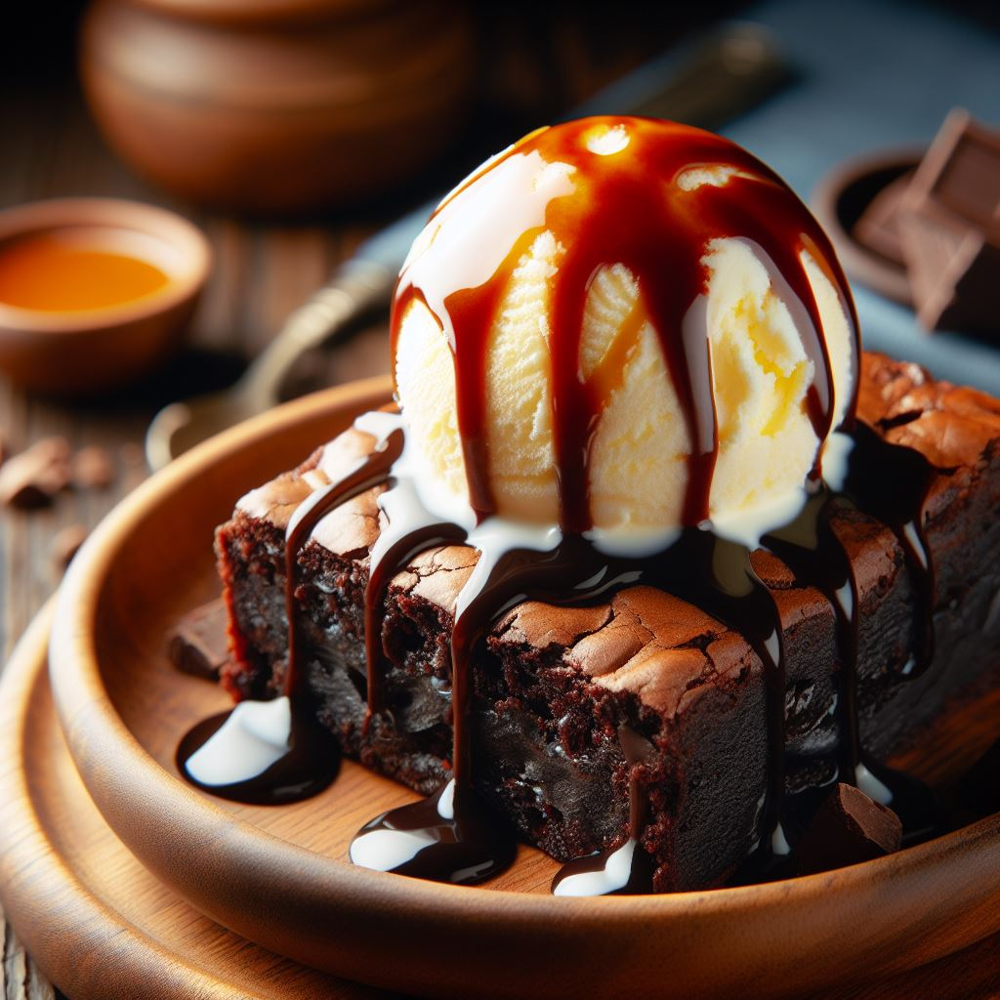
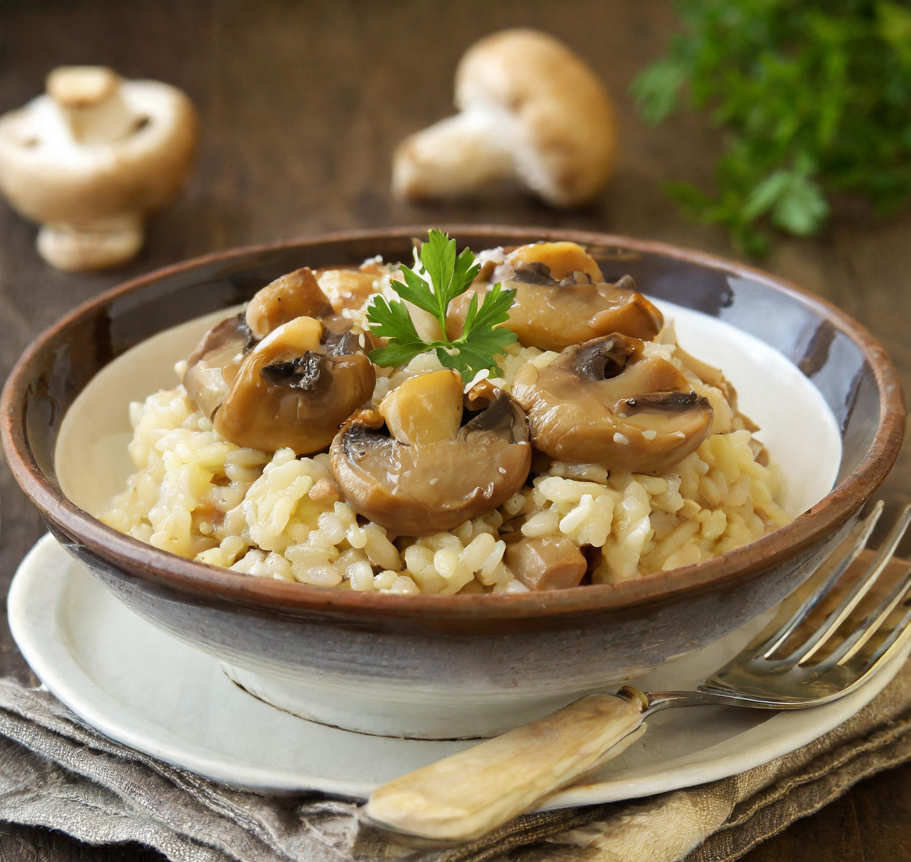
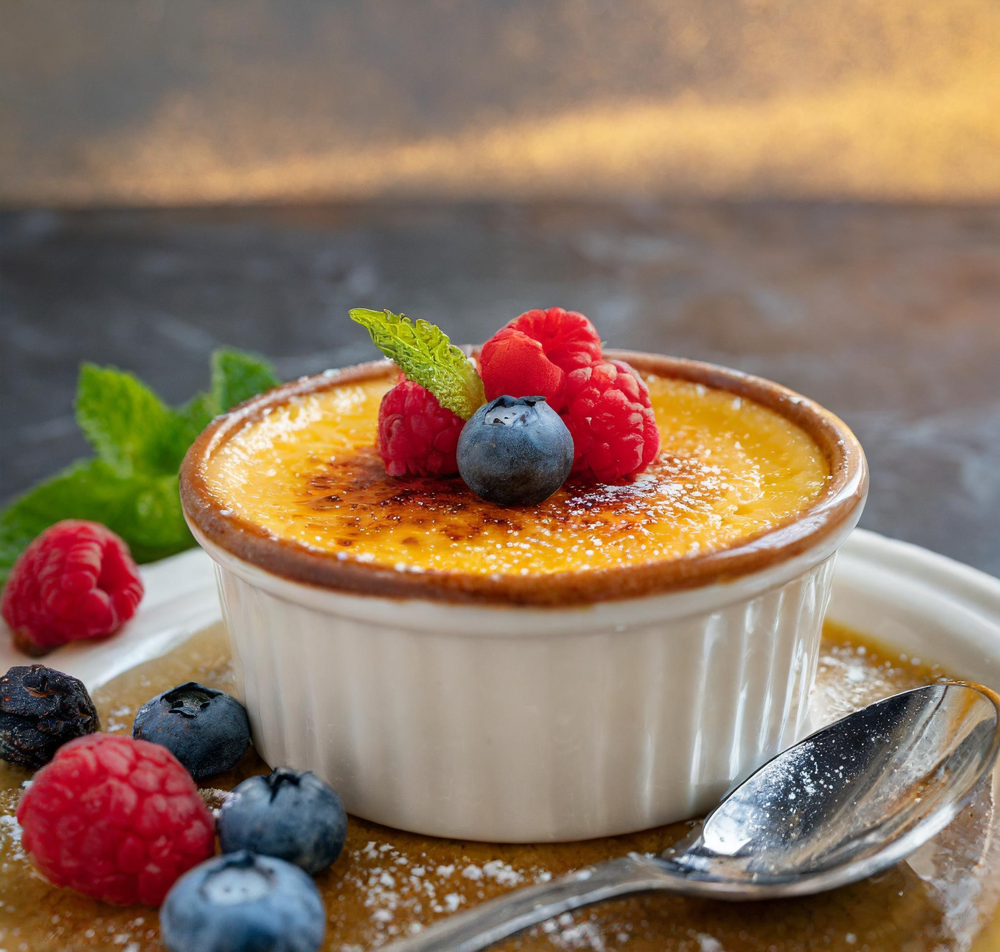
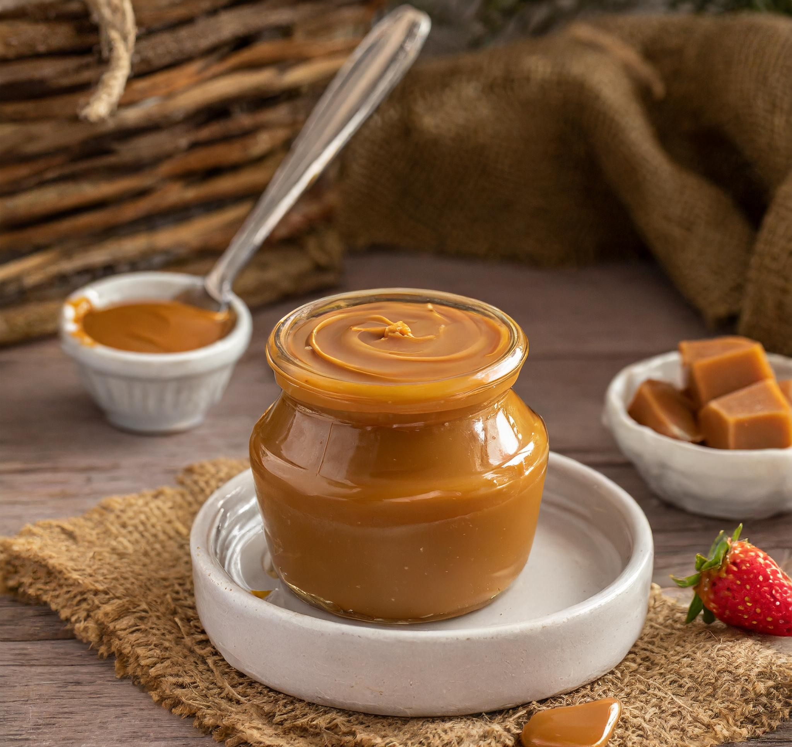

Home
Sobre
Contato
Índice de Receitas

Ceviche
Lasanha de Frango com Cream Cheese

Lombinho de Porco Assado com Alecrim e Alho

Coxinha com Massa de Mandioca

Brownie com Nozes

Risoto de Cogumelos
Pizza de Margherita

Creme Brulee

Doce de Leite
Sopa de Vegetais